- 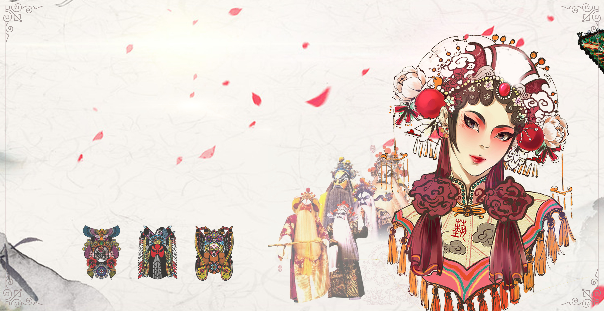
- 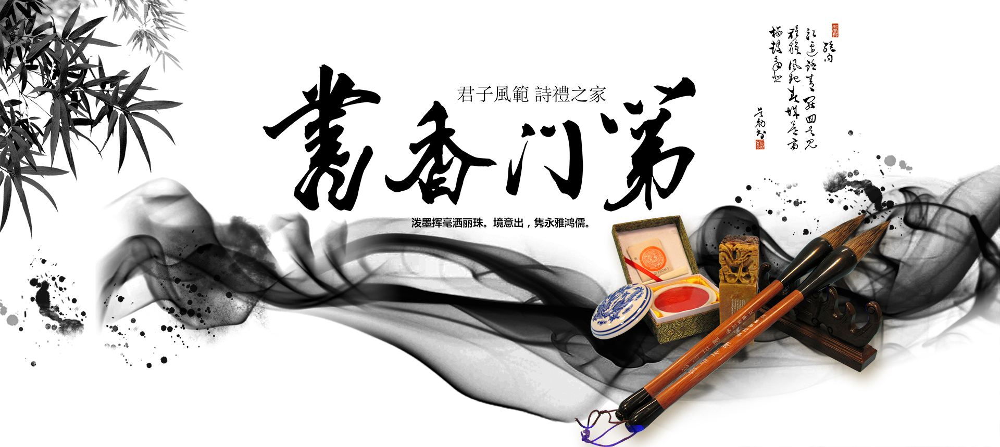
<
>
国画 （中国传统绘画形式）
国画一词起源于汉代，汉朝人认为中国是居天地之中者，所以称为中国，将中国的绘画称为“中国画”，简称“国画”。主要指的 是画在绢、宣纸、帛上并加以装裱的卷轴画。国画是中国的传统绘画形式，是用毛笔蘸水、墨、彩作画于绢或纸上。工具和材料有 毛笔、墨、国画颜料、宣纸、绢等，题材可分人物、山水、花鸟等，技法可分具象和写意。中国画在内容和艺术创作上，体现了古 人对自然、社会及与之相关联的政治、哲学、宗教、道德、文艺等方面的认知。
起源中国画起源古代，象形字，奠基础；文与画在当初，无歧异，本是一个意思。我国夙有书画同源之说，有人认为伏羲画卦、仓颉造 字，是为书画之先河。文字与画图初无歧异之分
分类中国画主要分为人物、花鸟、山水这几大类。表面上，中国画是以题材分为这几类，其实是用艺术表现一种观念和思想。所谓“画 分三科”，即概括了宇宙和人生的三个方面：人物画所表现的是人类社会，人与人的关系;山水画所表现的是人与自然的关系，将 人与自然融为一体;花鸟画则是表现大自然的各种生命，与人和谐相处。中国画之所以分为人物、花鸟、山水这几大类，其实是由 艺术升华的哲学思考，三者之合构成了宇宙的整体，相得益彰，是艺术之为艺术的真谛所在
人物画
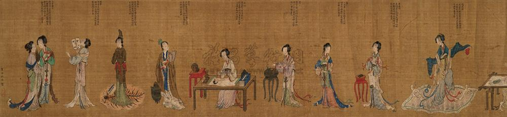 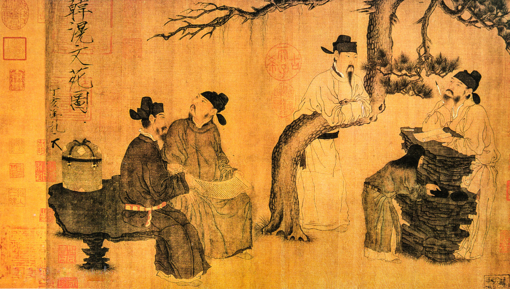
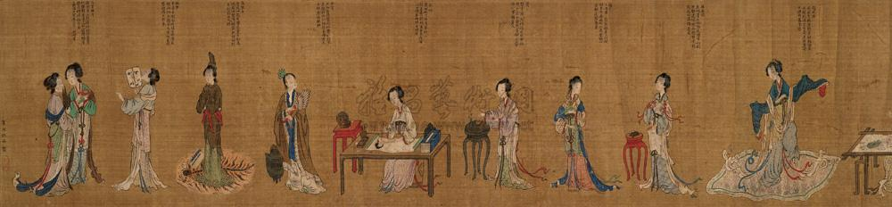 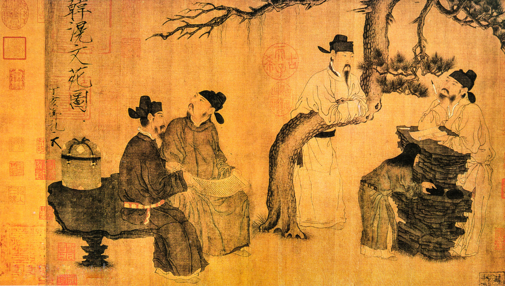
山水画
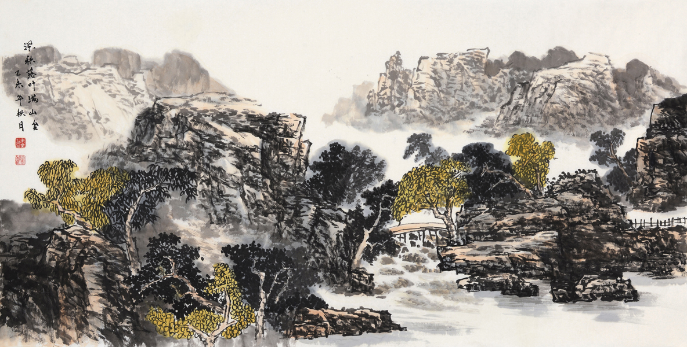 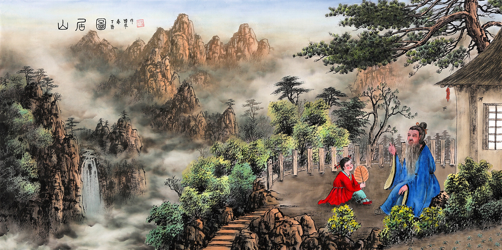
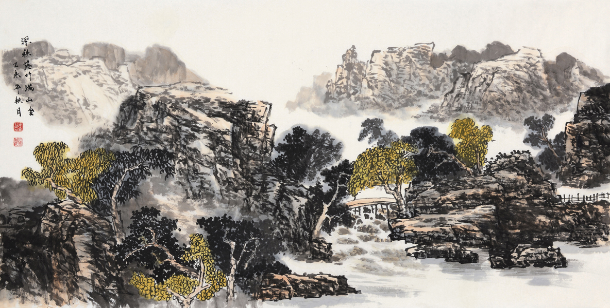 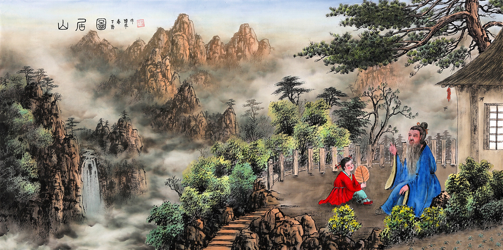
花鸟画
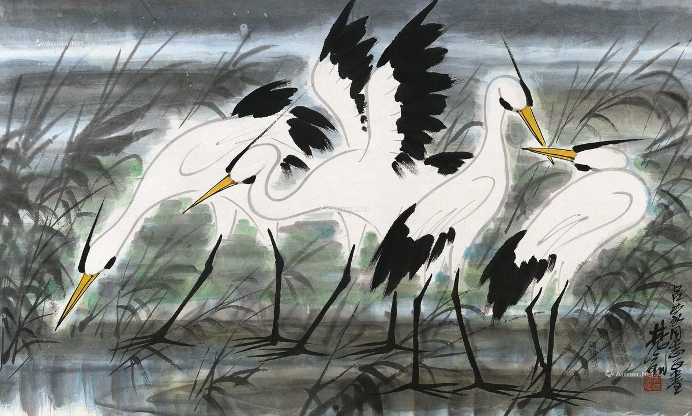 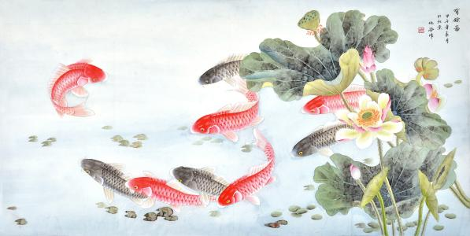
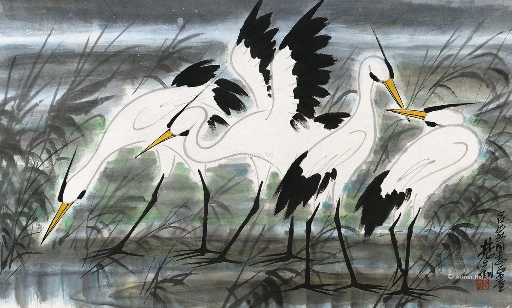 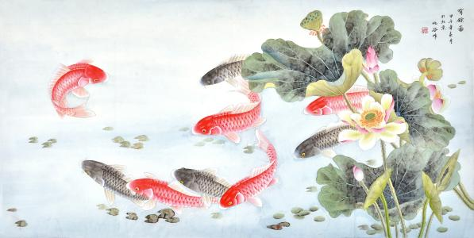